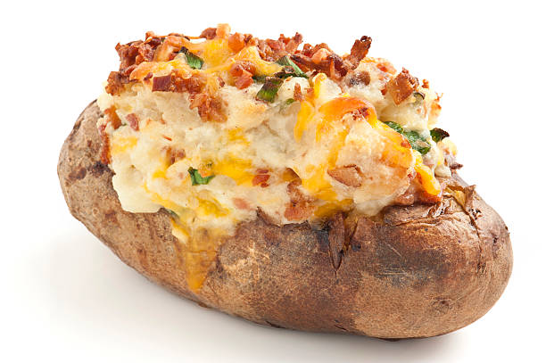

Baked Potato

Description
Delicious cheesy, savory side dish sure to please even the most discerning of dinner guests!
Ingredients
- Potato
- Cheese
- Bacon
- Chives
- Butter
- Sour Cream
Steps
- Bake the potato for 1 hour and 45 min at 375 degrees
- Cook the bacon until very crispy on the stove top or in the oven
- Add butter to the potato while still hot
- Crumble bacon and add to the potato
- Add Sour Cream and Chives to taste